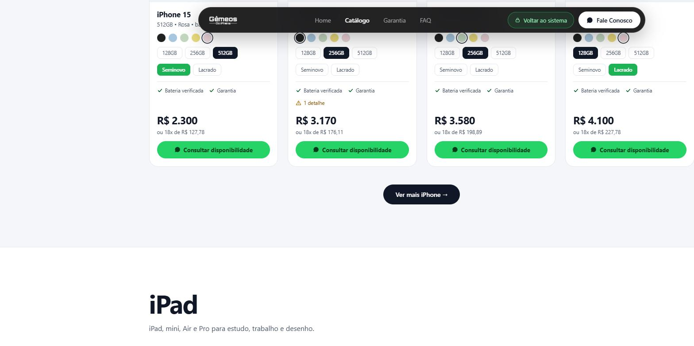
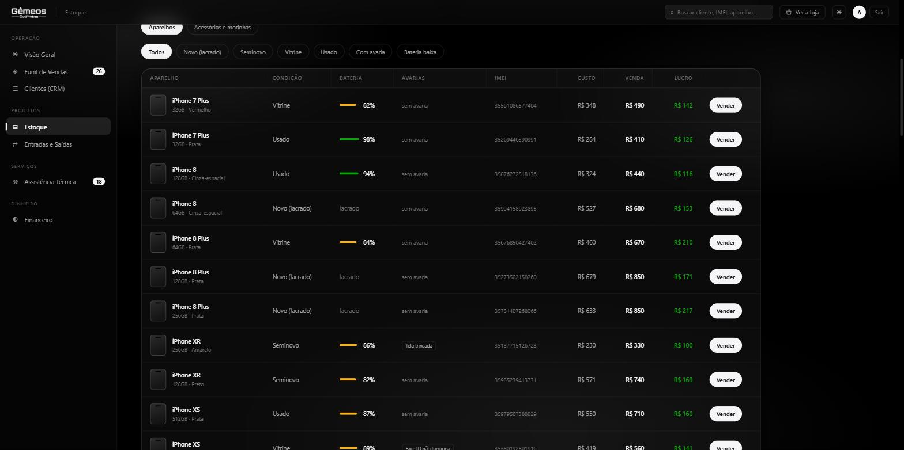
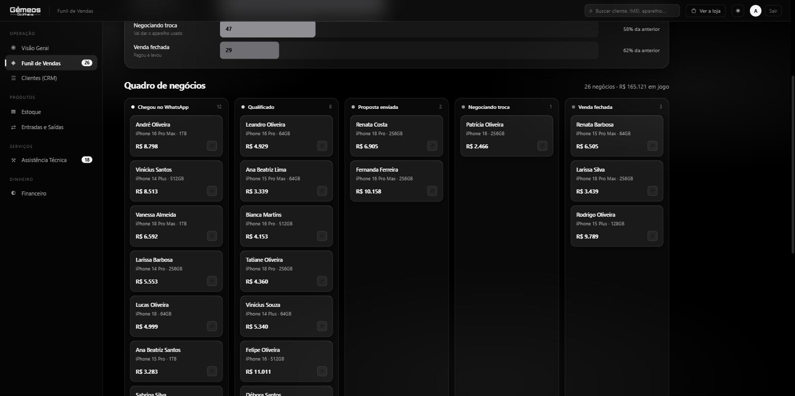
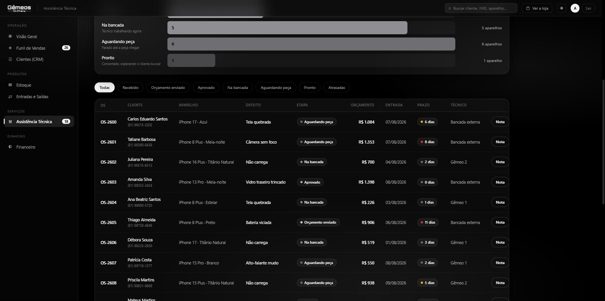

Da vitrine que o cliente vê ao controle que só a equipe enxerga.
Estoque, vendas, assistência técnica e caixa em um lugar só.
Você dá entrada no aparelho uma vez. Ele aparece na loja para o cliente e no controle para a equipe — sem digitar nada duas vezes.
O cliente entra pelo link, vê o estoque real e chama no WhatsApp já sabendo o que quer.
Logo, cores e a frase da casa: "Pra tudo tem solução".
Abre com movimento, como as grandes lojas de tecnologia.
A maioria dos clientes vai abrir pelo telefone.
Botão fixo na tela inteira, em qualquer página.
Seis categorias: iPhone, iPad, Apple Watch, MacBook, acessórios e motos elétricas. Com busca por modelo, cor ou memória.

Cores reais de cada geração, com a foto oficial do aparelho.
O que os outros escondem, aqui está escrito no anúncio.
Valor à vista e em 18x, sem o cliente precisar perguntar.
Chega no WhatsApp com modelo, cor, memória, bateria e preço.
Bateria e avaria são daquele aparelho, não do modelo. Por isso o controle é peça por peça, com IMEI — não por quantidade.

Custo, venda e lucro lado a lado, na mesma linha.
O sistema calcula pela condição, bateria e avarias — e mostra a conta.
Com avaria, bateria baixa, lacrado, seminovo, vitrine.
Escolhido o modelo, ele já oferece as memórias e cores que existem.
Cada conversa vira um cartão, da primeira mensagem até o fechamento. Dá para ver quanto dinheiro está em jogo agora.

Chegou no WhatsApp, qualificado, proposta, negociando troca, fechada.
Mostra onde o cliente desiste, para atacar o ponto certo.
Quanto está parado no funil, em reais, agora.
Negócio sem resposta há mais de 7 dias aparece na Visão Geral.
Toda ordem de serviço, da entrada até a entrega, com prazo e técnico responsável — e a nota do cliente sai pronta para imprimir.

Recebido, orçamento, aprovado, na bancada, aguardando peça, pronto.
Quem está esperando peça e há quantos dias.
Sai com defeito, valor, prazo de garantia e as duas assinaturas.
Soma dos orçamentos aprovados que ainda serão recebidos.
Tudo abaixo funciona hoje, com dados de exemplo, e pode ser aberto agora no celular de qualquer pessoa da equipe.
Fotografar o aparelho na entrada resolve os modelos sem foto oficial — e mostra a peça real ao cliente.
Hoje o cadastro vive no navegador. Com servidor, passa a valer para toda a equipe ao mesmo tempo.
Um gemeosdoiphone.com.br no lugar do link interno, para o cliente chegar de qualquer lugar.
Conectar ao atendimento para o cliente sair da loja direto na conversa, já identificado.